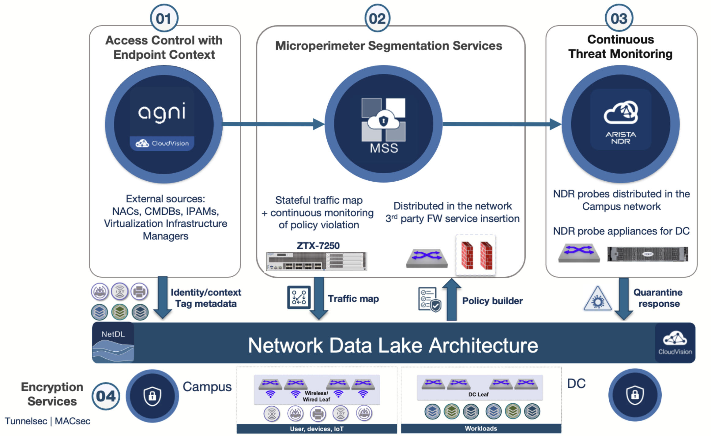
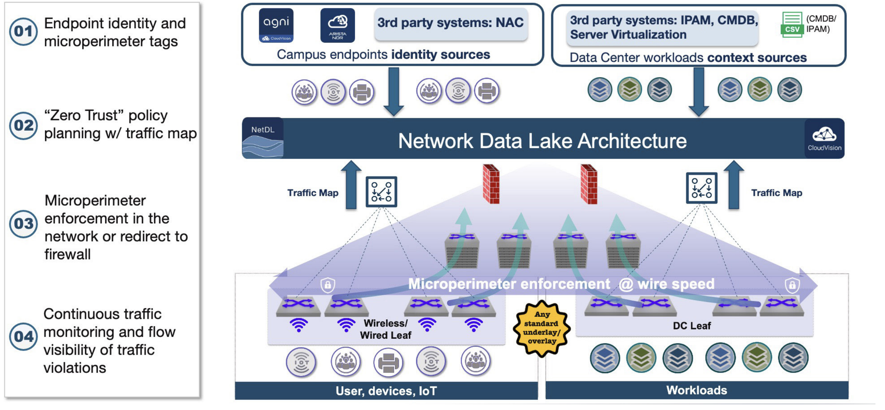
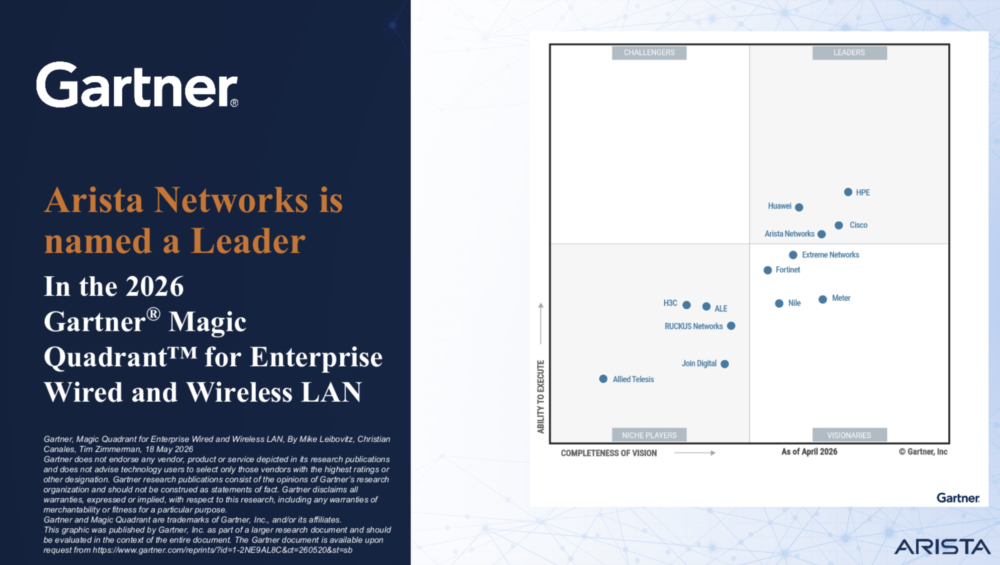

Welcome to the June 2026 edition of the Arista Federal Newsletter, created for our valued Federal Agency and System Integrator customers.¶
June provides an opportunity to reflect on two important American traditions: Flag Day and Father's Day. On June 14, we commemorate Flag Day, honoring the adoption of the United States flag in 1777 and recognizing the enduring principles of freedom, service, and national unity that our flag represents. For those of us serving Federal agencies, the Department of War, Federal System Integrators, and critical infrastructure organizations, Flag Day is also a reminder of the mission-focused work performed every day to protect and strengthen our nation's security and technological leadership.
"When we honor our flag, we honor what we stand for as a Nation—freedom, equality, justice, and hope." — President Ronald Reagan
In June we also celebrate Father's Day, recognizing the fathers, mentors, veterans, and role models who have shaped our lives through their leadership, sacrifice, and commitment to future generations. Their example reminds us of the importance of stewardship, resilience, and investing in those who will carry our missions forward.
“To be the father of a nation is a great honor, but to be the father of a family is a greater joy.” — Nelson Mandela - Former President of South Africa
Those same principles of leadership and preparedness are increasingly important as we navigate one of the most significant technological shifts in decades. Artificial Intelligence is rapidly transforming both innovation and cybersecurity. As AI accelerates vulnerability discovery, threat analysis, and cyber operations, organizations must rethink how they build resilient, secure-by-design architectures capable of defending against machine-speed threats.
In this month’s newsletter, you’ll find:
-
Arista’s Strategic Advantage in the AI-Era Threat Landscape
Arista Federal Client Director Kevin Carey explores Arista's perspective on emerging AI-driven cybersecurity initiatives, including Mythos and Project Glasswing, and discusses how Arista continues to invest in AI-enhanced software assurance, architectural resiliency, and operational security to help customers stay ahead of an increasingly sophisticated threat landscape.
-
Arista Networks Multi-Domain Segmentation Services (MSS) For Zero Trust Networking
Arista Federal Systems Engineer Lee Gillespie examines how Arista Multi-Domain Segmentation Services (MSS) helps federal agencies, defense organizations, and critical infrastructure operators implement Zero Trust architectures through dynamic segmentation, policy enforcement, and threat containment across distributed environments.
-
Arista Networks Positioned as a Leader in the 2026 Gartner® Magic Quadrant™ for Enterprise Wired and Wireless LAN
We also highlight Arista Networks' continued industry leadership, named as a Leader in the 2026 Gartner® Magic Quadrant™ for Enterprise Wired and Wireless LAN Infrastructure. This recognition reflects Arista's commitment to innovation, operational simplicity, cloud-native architecture, and delivering exceptional outcomes for our customers across Federal, Defense, and enterprise environments.
This newsletter is for you and we welcome your feedback, ideas, and requests at fed@aristafederal.com.
As always, thank you for your partnership and trust in Arista. We remain committed to helping our customers build secure, resilient, and modern network infrastructures that support mission success today and well into the future.
Arista Blog¶

Arista’s Strategic Advantage in the AI-Era Threat Landscape¶
By Kevin Carey – Arista Federal Client Director
Arista is helping customers stay ahead in an increasingly AI-driven threat landscape. As AI continues to accelerate vulnerability discovery and cyber risk across the industry, our focus remains on delivering secure, resilient infrastructure for Federal Agencies, Federal System Integrators, Defense organizations, and critical infrastructure environments.
This shift represents a major inflection point in cybersecurity. Security is no longer defined solely by how quickly vulnerabilities can be patched. The challenge now is designing architectures and operational frameworks that are resilient by design, minimizing exposure, rapidly identifying risk, and containing threats before they become operationally significant.
This is more than an evolution in cybersecurity; it is a fundamental paradigm shift. Organizations are no longer defending solely against human adversaries. They are increasingly defending against autonomous AI reasoning engines and intelligent agents capable of operating at machine speed, scaling vulnerability discovery, analysis, exploit development, and attack methodologies far beyond traditional human-driven cyber operations.
Anthropic’s “Mythos” (often referred to as Claude Mythos or Mythos Preview) initiative has received significant attention across the cybersecurity industry because it highlights a rapidly evolving reality: AI is accelerating both innovation and cybersecurity risk at an unprecedented pace. As AI models become more capable, the speed at which vulnerabilities can be discovered, analyzed, and potentially weaponized is increasing dramatically.
For our customers, understanding how technology providers are adapting to this rapidly evolving threat landscape is increasingly important. That is why we felt it was valuable to share Arista’s perspective and highlight Arista’s recent Statement on AI-Enhanced Security and Resilience. The statement reinforces several areas where Arista has long differentiated itself, including EOS architectural resiliency and modularity, historically low CVE exposure, reduced attack surface through secure-by-design engineering, operational stability, efficient remediation processes, and ongoing investment in advanced security validation and testing. A link to the statement is provided below in the References section.
We believe customers value transparency and proactive communication, particularly as AI-driven cybersecurity discussions continue to gain momentum across government and industry. By sharing this information, Arista Federal is helping customers stay informed about both the evolving threat environment and the steps Arista is taking to ensure our platforms continue to deliver the reliability, security, and operational simplicity our customers depend on.
What Are Mythos and Project Glasswing?
Mythos is widely viewed within the cybersecurity industry as a next-generation AI cyber model designed to assist in vulnerability discovery, exploit analysis, and advanced security research.
Project Glasswing is a broader industry initiative focused on AI-enhanced vulnerability discovery and advanced defensive testing methodologies. Significantly, Arista was selected by Anthropic as one of a limited number of collaborators participating in Project Glasswing. This recognition reflects Arista's longstanding commitment to software quality, security engineering, and architectural resilience.
The objective is straightforward: use AI defensively to identify and mitigate vulnerabilities before adversaries can weaponize the same capabilities offensively. These technologies are changing the cybersecurity equation by lowering the barrier to entry and accelerating the pace, scale, and sophistication of cyber threats. Arista recognized this shift early. We are integrating AI-driven vulnerability discovery and assessment capabilities into our software development and testing lifecycle, complementing existing security disciplines, including:
- Static and Dynamic Application Security Testing (SAST/DAST)
- Human-led threat modeling
- Extreme and edge-case testing
- Automated security validation pipelines
The result is a proactive security posture designed to identify and remediate issues before software is released into production environments.
Architecture Matters More Than Ever
The rise of AI-driven cyber capabilities reinforces a critical truth in network security: architecture matters. Many legacy networking platforms were developed decades ago using monolithic operating system designs that create broader attack surfaces, larger blast radius, and operational dependencies. As vulnerabilities emerge, these platforms often require disruptive remediation efforts, broad patch cycles, and increased operational risk.
Arista’s Zero Trust strategy is built around a simple but important principle: the network itself becomes an active security enforcement platform — not just a transport layer. Instead of relying solely on perimeter-based security models, Arista focuses on continuous verification, segmentation, visibility, and operational automation across the entire infrastructure.
Arista EOS was Architected Differently from the Beginning.
Arista EOS was architected differently from the beginning. Its modular, state-sharing design provides control and data plane separation, process and protocol isolation, fault containment, operational resiliency, and targeted remediation capabilities. By isolating software agents and containing issues to specific processes, EOS helps prevent faults from cascading across the operating system. Arista’s Zero Trust posture is strengthened by EOS architecture itself. This approach provides Arista with a major strategic advantage in the AI era:
- Reduced attack surface
- Lower vulnerability density
- Smaller operational blast radius
- Faster remediation workflows
- Greater infrastructure stability
EOS and its modular, state-sharing architecture is one of the key reasons Arista has historically maintained comparatively low CVE exposure across its networking portfolio.
Operational Speed Becomes a Strategic Weapon
In an AI-accelerated threat environment:
- Speed is critical
- Speed of identification
- Speed of visibility
- Speed of analysis
- Speed of remediation
This is where the broader Arista portfolio creates a unique competitive advantage.
Arista CloudVision
CloudVision serves as the operational command center for modern enterprise, cloud, and mission-critical networks. More than a traditional management platform, CloudVision provides centralized visibility, automation, telemetry, analytics, and orchestration across the entire network infrastructure, enabling organizations to operate with greater speed, consistency, and security.
In an AI-driven threat landscape, operational awareness is just as important as threat prevention. CloudVision delivers a comprehensive, real-time inventory of network devices, software versions, configurations, and operational state across the environment. This visibility enables organizations to quickly assess potential exposure when new vulnerabilities are identified, determine which systems may be affected, prioritize remediation efforts, and better understand their overall attack surface.
By combining real-time visibility with automation and analytics, CloudVision enables organizations to move beyond reactive network management and toward proactive operational resiliency. Integrated with EOS, MSS, AGNI, and NDR, CloudVision delivers the operational intelligence needed to rapidly identify risk, accelerate remediation, simplify vulnerability management, and maintain mission continuity across increasingly complex and distributed environments.
Arista Multi-Domain Segmentation Services (MSS)
MSS extends Zero Trust principles across enterprise, cloud, campus, and mission-critical environments by enabling identity-aware segmentation and policy-based traffic control throughout the network. MSS helps organizations reduce exposure and contain threats before they can spread.
As AI-driven attack methodologies continue to evolve, the ability to rapidly contain potential compromise is becoming just as important as preventing initial access. MSS enables organizations to define, automate, and enforce segmentation policies that reduce operational blast radius without the complexity traditionally associated with segmentation architectures.
Integrated with CloudVision, EOS, AGNI, and NDR, MSS serves as a foundational component of Arista’s Zero Trust strategy, combining visibility, policy enforcement, automation, and threat containment into a unified operational security framework.
Arista AGNI (Arista Guardian For Network Identity)
As organizations embrace AI while defending against AI-accelerated cyber threats, maintaining visibility into users, devices, applications, and network activity has never been more critical. Arista AGNI (Arista Guardian for Network Identity) delivers identity-based network access control. AGNI is designed keeping in mind the 5-S fundamentals of network designing — simplicity, scalability, security, stability, and savings (cost-effective). It integrates with all the major Identity and Access Management (IAM) products to support Single Sign-On (SSO). Its intuitive and easy user interface offers managing and monitoring the entire network from a central, single pane of glass.. Keeping in mind the future of security, this solution can also drive users towards a more secure, password-less technology such as digital certificates.
By correlating information across users, devices, applications, and infrastructure, AGNI provides real-time visibility into network behavior, identity, and risk posture. Integrated with EOS, CloudVision, MSS, and NDR, AGNI enhances network access control with identity intelligence, behavioral context, and comprehensive visibility across the environment. Together, these capabilities enable organizations to quickly detect suspicious activity, limit lateral movement, dynamically isolate compromised devices, and reduce response times. Simply put, AGNI helps organizations answer critical questions: What is happening across the network, who is involved, and is it normal?
AGNI serves as a force multiplier for security and operations teams. By combining identity awareness, segmentation, automated policy enforcement, and AI-driven operational insights, Arista helps transform cybersecurity from a reactive process into a proactive, resilient strategy designed to defend against increasingly sophisticated, machine-speed attacks while supporting Zero Trust initiatives and mission-critical operations.
Arista Network Detection and Response (NDR)¶
NDR provides continuous visibility, behavioral analytics, and AI-driven threat detection across enterprise, cloud, and mission-critical environments. By leveraging the network as a primary source of security intelligence, NDR enables organizations to rapidly identify, investigate, and respond to advanced threats before they become operationally significant.
As cyber adversaries increasingly leverage automation and artificial intelligence to accelerate attacks, traditional signature-based security tools are often insufficient to detect sophisticated threats, lateral movement, insider risks, and previously unknown attack techniques. NDR addresses this challenge by continuously analyzing network behavior, identifying anomalies, and delivering actionable intelligence in real time.
When integrated with CloudVision, MSS, AGNI, and EOS, NDR becomes a critical component of a unified cyber-defense architecture that combines visibility, analytics, automation, and operational resiliency to strengthen security across the entire infrastructure. Together, CloudVision, MSS, AGNI, NDR, and EOS create a comprehensive operational security framework where visibility, automation, analytics, policy enforcement, and architectural resiliency work together to reduce risk, accelerate response, and strengthen mission assurance. In an AI-driven threat landscape, success is no longer determined solely by how quickly organizations can patch vulnerabilities. It is determined by how effectively they can identify risk, contain threats, automate response, and maintain operational continuity. This is where Arista’s architecture and operational model provide a distinct strategic advantage.
Arista’s Zero Trust Model Is Different
Many vendors approach Zero Trust by layering multiple standalone security products onto the network. Arista’s strategy is different.
Arista embeds security directly into the operational fabric by combining:
- EOS resiliency
- CloudVision orchestration
- MSS segmentation
- AGNI intelligence
- NDR analytics
- Real-time telemetry and automation
The result is a unified operational model where:
- The network becomes the sensor
- The network becomes the enforcement layer
- Security becomes operationally integrated
- Visibility and response happen in real time
In the AI era, Zero Trust is no longer just about authentication or segmentation. It is about building infrastructure that can:
- Continuously validate trust
- Detect anomalies rapidly
- Contain threats immediately
- Automate operational response
- Maintain mission continuity under pressure
Arista’s Zero Trust strategy is designed specifically for that reality, helping Federal Agencies, Federal System Integrators, Defense organizations, and critical infrastructure operators reduce operational risk while improving security, resiliency, and visibility across modern distributed environments.
Arista Is Strategically Positioned for the Future
AI-driven cybersecurity capabilities like Mythos and Project Glasswing represent a major industry evolution. The pace of vulnerability discovery and cyber operations will continue to accelerate, and organizations relying on legacy operational models will face growing challenges keeping pace with machine-speed threats.
Arista is positioned differently. By combining resilient architecture, AI-enhanced software assurance, operational automation, and real-time visibility, Arista is helping federal agencies and enterprise organizations prepare for the next generation of cybersecurity challenges while maintaining the operational simplicity, stability, and security modern mission environments demand. The future of cyber resilience will belong to organizations that can combine architectural strength with operational speed and that is exactly where Arista leads.
References: Arista Statement on AI-Enhanced Security and Resilience:
https://www.arista.com/en/support/advisories-notices
Arista EOS Hardening Guide:
https://arista.my.site.com/AristaCommunity/s/article/arista-eos-hardening-guide
Arista Vulnerability Management Process:
https://www.arista.com/en/support/product-documentation/vulnerability-management-process
Arista’s Zero Trust Networking:
https://www.arista.com/en/solutions/security
Arista Networks Multi-Domain Segmentation Services (MSS) For Zero Trust Networking¶
By Lee Gillespie -- Acting CEO
What is Arista MSS?
Arista MSS is a security service built as an extension of Arista’s core Extensible Operating System (EOS) and centrally managed via the CloudVision orchestration platform.
Instead of tying security policies to brittle network boundaries like IP subnets or VLANs, MSS allows security and network teams to define granular "microperimeters" based on endpoint identity. Whether an endpoint is an engineering laptop, an IP camera, or a database workload in a VXLAN EVPN fabric, MSS groups them dynamically by intent. Policies are then configured centrally and enforced directly at the network hardware level at wire-speed lines.
Core Architecture and Key Capabilities

-
Endpoint Identity and Microperimeter Tagging
The foundation of MSS is its ability to identify endpoints and workloads and assign them to microperimeter groups using tags. Rather than relying on static IP addresses, MSS connects to external identity and management sources — including NAC systems (such as Cisco ISE, ClearPass, and Forescout), CMDBs (like ServiceNow), IPAM systems, VMware vSphere/vCenter, and Arista's own AGNI (network identity service) — to dynamically discover and tag devices as they join the network.
This means segmentation policies follow the identity of the endpoint, not its location on the network.
-
Zero Trust Policy Planning with Traffic Mapping
Before any policy is enforced, MSS maps all communications within and across network domains. Using CloudVision's Policy Builder and ZTX (Zero Trust Exchange) monitoring nodes, the platform observes traffic flows and generates recommended policies that permit only trusted, observed communications. Security teams can review, audit, and refine these recommendations before deploying them — reducing the risk of accidentally blocking legitimate traffic.
-
Microperimeter Enforcement in the network or redirect to Firewall Once policies are defined, MSS distributes them to Arista EOS-powered switches, which enforce them at wire speed using a stateless tagging engine. This switch-based enforcement model overcomes a key limitation of traditional ACL-based segmentation: TCAM (Ternary Content Addressable Memory) exhaustion. By using an advanced tagging engine, MSS optimizes hardware utilization and scales far beyond what traditional ACLs allow.
For traffic requiring deeper inspection, MSS can redirect flows to a third-party firewall (such as Palo Alto Networks with Panorama) for stateful Layer 4–7 analysis — providing the best of both worlds.
-
Continuous Monitoring & Visibility
The MSS dashboard provides unified network telemetry. It continuously logs traffic anomalies, flags real-time policy violations, and surfaces hidden network dependencies. This visibility cycle allows network operators to dynamically adjust firewall rules or isolate infected nodes instantly before threats spread.
One of MSS's most significant differentiators is its consistent architecture across campus, branch, and data center environments — all managed through a single CloudVision platform and enforced by the same EOS binary running on every Arista switch. There are no separate management planes, no policy translation layers, and no coverage gaps between domains.
Architectural Distinctions: Why Arista MSS Stands Out
Unlike proprietary, monolithic alternatives on the market, Arista's approach focuses on simplicity and multi-vendor viability:
-
No Proprietary Tagging: Many legacy switch vendors require proprietary packet-tagging protocols to enforce group-based policies. Arista MSS relies on standard Ethernet and open VXLAN BGP EVPN overlay fabrics, enabling it to coexist with third-party network hardware.
-
Agentless Architecture: Security is completely managed within the network fabric. There is no need to deploy, maintain, or update heavy security software agents on individual servers or endpoint devices, which is critical for legacy systems and IoT devices where agents cannot be installed.
-
Deep Firewall Ecosystem Integration: Rather than forcing enterprises onto a proprietary firewall solution, Arista MSS natively integrates via open APIs with leading Next-Generation Firewalls (NGFWs), such as Palo Alto Networks Panorama and cloud proxies like Zscaler. The network automatically discovers the firewalls via Link Layer Discovery Protocol (LLDP) and offloads basic rule enforcement to the switches, allowing the firewalls to dedicate 100% of their compute capacity to threat inspection.
A key architectural decision that sets MSS apart is its agentless approach. Unlike many competing solutions, MSS does not require software agents to be installed on endpoints. This matters enormously for:
- IoT and OT devices that cannot host agents
- Legacy systems running unsupported operating systems
- Third-party equipment where agent installation is not permitted
Similarly, MSS has no dependency on proprietary network protocols, meaning it can be deployed in heterogeneous environments without requiring a full network refresh or vendor lock-in at the switching layer.
Conclusion

Arista MSS represents a significant maturation in how enterprises can approach network security. By combining agentless operation, protocol independence, consistent multi-domain coverage, and deep integration with both Arista's own platform and third-party security tools, MSS eliminates the tradeoffs that have historically made microsegmentation either too complex to implement or too narrow in scope to be effective.
As enterprise networks continue to grow in complexity — with more devices, more domains, and more sophisticated threats — solutions like Arista MSS that deliver unified, identity-based segmentation at wire speed will become not just best practice, but a baseline requirement for any organization serious about network security.
Arista Networks Positioned as a Leader in the 2026 Gartner® Magic Quadrant™ for Enterprise Wired and Wireless LAN¶
Arista Release Date - 2026-05-20
One of the most significant developments for Arista this year is our recognition as a Leader in the 2026 Gartner® Magic Quadrant™ for Enterprise Wired and Wireless LAN Infrastructure. This recognition reflects Arista’s continued momentum beyond the data center and into the enterprise campus, where organizations are increasingly seeking simpler operations, stronger security, AI-driven insights, and unified networking architecture.
Gartner's Magic Quadrant is one of the most closely watched evaluations in the networking industry, providing customers with an independent assessment of a vendor's vision and ability to execute. We believe Arista's position as a Leader validates our commitment to delivering a modern, software-driven networking platform built on EOS®, CloudVision®, and AI-powered operations that span the data center, campus, and edge.
For Federal agencies and mission-critical organizations pursuing modernization, operational efficiency, and Zero Trust initiatives, this recognition further demonstrates why Arista continues to gain market share and challenge legacy networking approaches with a more resilient, automated, and cloud-scale architecture.

Arista Press release:
https://www.arista.com/en/company/news/press-release/24030-pr-20260520
Report Download:
https://solutions.arista.com/gartner-2026-wired-wireless-mq
Webinars and Events¶
-
Webinars
We make is easy for you to view products that are of interest, all virtually! Technical memebers of the team showcase outstading explanation of the products. Click below to see our list of Webinars.
-
Events
Join us in person to get a closer look in our list of produts and solution, as well as get the chance to meet members of the team. Click below to see our list of ipcoming Events.
Software Updates¶

Stay informed on the latest software updates across all Arista products and services.
| Software | Version | Release Date |
|---|---|---|
| EOS | 4.33.8M 4.22.11M 4.34.6M 4.35.4M |
May 12th, 2026 May 6th, 2026 May 6th, 2026 May 23rd, 2026 |
| CVP | Portal 2026.1.0 Appliance 7.1.0 Sensor 1.3.0 |
March 30th, 2026 September 2nd, 2025 December 5th, 2025 |
| DMF | 8.10.0 | April 22nd, 2026 |
| CV-CUE | 21.0.0 | January 16th, 2026 |
| Arista NDR | 5.3.5 | July 16th, 2025 |
| TerminAttr | 1.42.1 | February 4th, 2026 |
| VeloCloud SD-WAN Orchestrator/Gateway/Edge |
6.4.1 | December 19th, 2025 |
View All Latest Software Updates
Security Advisories and Field Notices¶
Stay informed on the latest platform security and field notice updates. For more information on Arista's statement on AI-Enhanced Security and Resilience regarding Mythos and project Glasswing, click here.
Security Advisories¶
- Dirty Frag Vulnerability — Security Advisory 0138
(May 8th, 2026) - Tunnel Decapsulation Configuration — Security Advisory 0137
(May 5th, 2026) - Copy Fail Vulnerability — Security Advisory 0136
(May 1st, 2026)
Field Notices¶
- CloudEOS Pay As You Go — Field Notice 0128
(May 11th, 2026) - Default Option Change in the Access Point Upgrade Feature in CV-CUE — Field Notice 0127
(May 5th, 2026) - TerminAttr — Field Notice 0126
(May 4th, 2026)
View All Latest Advisories & Notices
Product Updates¶
Stay up to date on all new Arista Product Releases, as well as End of Sale/End of Support Notices.
New Product Releases * Q1 2026 — Ask AVA - CloudVision as a Service (beta feature)¶
End of Sale / End of Software Support¶
- May 15th, 2026 — VeloCloud Security VNF Services
View All Latest End of Sale & Support Notices
Did You Know?¶
Arista has revamped their certifications! The new Arista Certified Engineer (ACE) program is now organized by specific tracks like Cloud Data Center, Campus, and Automation to better align with your job role.

Feel Free to Reach Out To Us For Your Network Needs¶

We thank you for taking the time to read out newsletter today. Feel free to reach out to your SE or ASE for more information or questions regardsing your network operations. Until next month, have a good one!